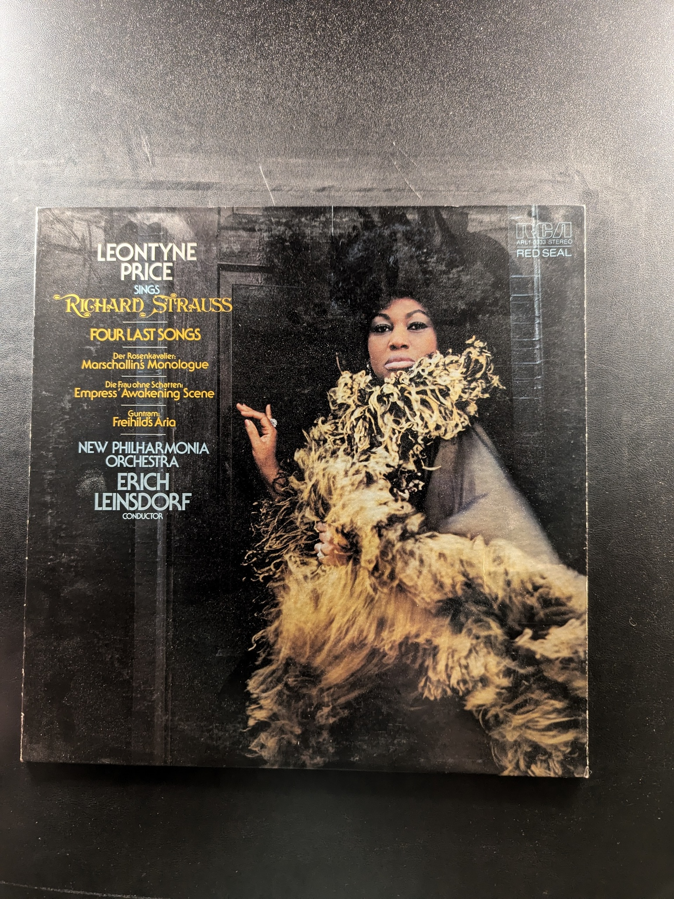
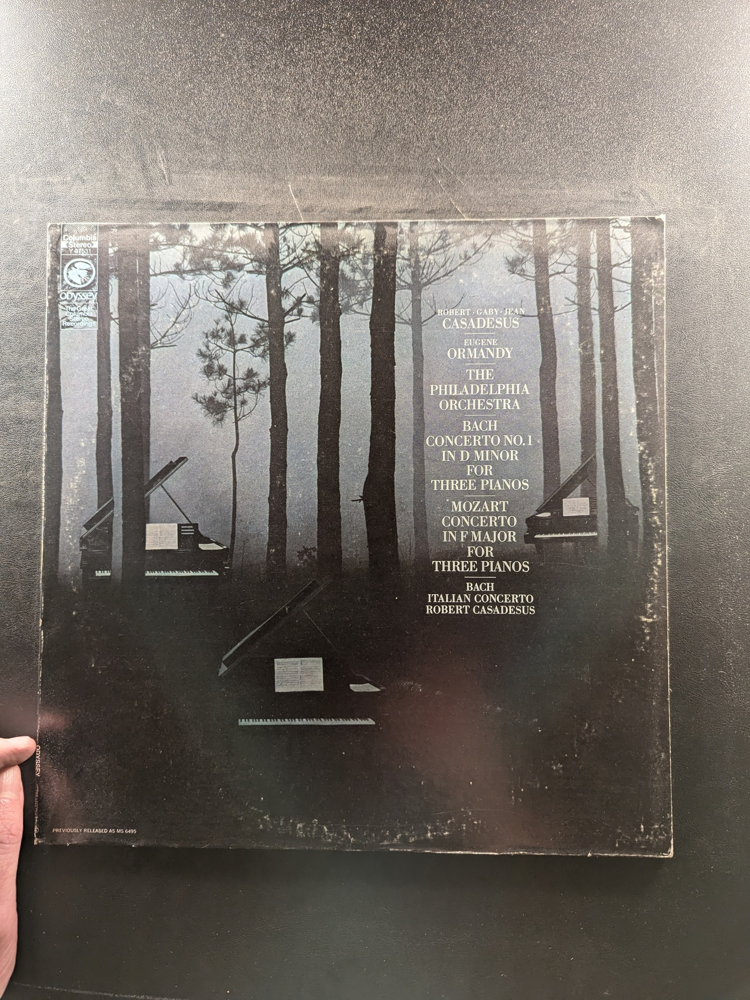

Musical Offering
J.S. Bach, The Stuttgart Chamber Orchestra, Karl Münchinger
London ffrr CST 6646
Cantata No. 131 & Cantata No. 106
Johann Sebastian Bach
Musical Heritage Society MHS 3420
3 Sonaten für Viola da gamba und obligates Cembalo BWV 1027-1029
Johann Sebastian Bach
Archiv Produktion 2533 055
Verklärte Nacht - Transfigured Night / String Quartet No. 2
Schönberg
Turnabout TV 4032
Missa de Beata Virgine
Josquin Des Pres
Turnabout Vox TV 34023
Leontyne Price Sings Richard Strauss
Leontyne Price
RCA Red Seal ARL1-0130
The Great Cantatas of Johann Sebastian Bach
Johann Sebastian Bach
The Musical Heritage Society Inc. MHS 516
Credo Mass / Coronation Mass
Mozart
Philips
Dixit Dominus
Handel
Vanguard Everyman Classics SRV-249SD
The First Release
Various Artists
ABC Classics SC 4027
Christmas Cantata / Symphony for Strings
Ansermet, L'Orchestre de la Suisse Romande
London OS 25320
Beethoven Concerto No. 4
Cliburn / Reiner
RCA Victor LSC-2680
Cantata No. 20 'O Ewigkeit, du Donnerwort'; Cantata No. 168 'Tue Rechnung! Donnerwort'
Johann Sebastian Bach
Musical Heritage Society Inc. MHS 1281
Cantata No. 178 & Cantata No. 73
Johann Sebastian Bach
Musical Heritage Society MHS 1694
Violin Concertos in E major and in A minor / Double Concerto in D minor / Air from Suite No. 3
J.S. Bach, Maurice Hasson, Henryk Szeryng, Academy of St. Martin-in-the-Fields, Neville Marriner
Philips
Sonata in C Minor, Partita in E Minor, Sonata No. 3 in E Major
Alexander Zakin
Columbia Odyssey Y 32524
Requiem, Op. 48
Gabriel Fauré
Musical Heritage Society MHS 1507
A Capella Motets
Philippe Caillard Vocal Ensemble
Musical Heritage Society MHS 634
L'Amfiparnaso
Orazio Vecchi
The Musical Heritage Society Inc. OR 360
Bach Concerto No. 1 in D Minor for Three Pianos / Mozart Concerto in F Major for Three Pianos / Bach Italian Concerto
Robert, Gaby, Jean Casadesus; Eugene Ormandy; The Philadelphia Orchestra
Odyssey 32 16 0158
Concertos for Harpsichord: A major, F minor, E major
Johann Sebastian Bach
Das Alte Werk
Motets
Johann Sebastian Bach
Nonesuch H-71066
Magnificat in D, Cantata No. 51
J.S. Bach
Nonesuch H-71011
{kind=link}
{kind=link}
{kind=link}
{kind=link}
{kind=link}
{kind=link}
{kind=link}
{kind=link}
{kind=link}
{kind=link}
{kind=link}
{kind=link}
{kind=link}
{kind=link}
{kind=link}
{kind=link}
{kind=link}
{kind=link}
{kind=link}
{kind=link}
{kind=link}
{kind=link}
{kind=link}